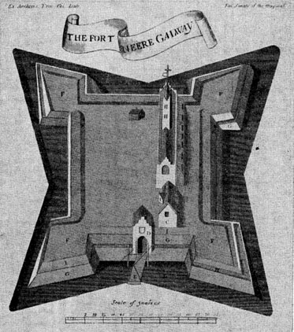

<title>Hardiman's History of Galway, Part I, Chapter 4</title>

<center>

CHAP. IV.<p>

FROM 1484 TO THE COMMENCEMENT OF THE IRISH REBELLION
IN 1641.
</center>

<p>

<hr>
Wardenhsip of Galway instituted by the archbishop of Tuam, and confirmed by Pope Innocent Vlll.-Charter of Richard 111.-Remarkable instance of inflexible justice-Fortifications built-Greatfire in the town-Battle of Knock-Tuadh-Hospital built, and several improoements made-Disputes between Galu)ay and Limerick-Prisage of wines claimed-Orders of Henry Vlll. to the inhabitants-The lord deputy Grey, honorably received in the town, and several Irish chiefs come in, and submit-Sir William de Burgh created Earl of Clanrickard, and deprived of all power in Galway-Charter of Henry Vlll.-Mercantile bye-laws-Charters of Edward Vl.-The earl of Sussex, chief governor, arrives in Galwcy, and is splendidly received-Sir Henry Sidney, his successor, arrives in town-Insurrection of the Mac-an-Earlas-Their defeat-Charter of Elizabeth-The lord justice, Sir William Pelham, arrives in town, and confirms the charter-Sir John Perrot, lord deputy, comes to Galway-Prisage of wines in the touJn, established by the earl of Ormond-One of the vessels of the Spanish armada wrecked in the bay-The Lord deputy, Sir William Fitzwilliams, arrioes in town, puts several of the Spaniards to death-Sir William Russell, lord deputy; arrives alnd investigates the state of the town and province-The tou)n beseiged by Hugh Ruandh O'Donnel-Licentiousness of the inhabitants of the country-The chief governor, lord Mountjoy, visits the townSt. Augustine's fort built-Charter of James 1.-The town erected into a separate jurisdiction-The lord deputy, Viscount Falkland, arrives in Galtsay-His munificence-Fort of Ballymanagh builtVeveral forbfications erectedAplendid entry into Galu)ay and reception of Viscount Wentu)orth, lord deputy-His oppressive proceedings against a jury of the countyWoncluding observations.
<hr>

THE town of Galway having considerably increased in wealth and opulence during the last two centuries, (by its constant and gradually extending commerce with the nations of Europe, but particularly with France and Spain, from whence its merchants annually imported vast quantities of wine,) and the principal part of the inhabitants being connected together by the ties of kindred, (which were daily augmenting by frequent intermarriages,) and by the more powerful influence of mutual interest: the great and continual object of their care and solicitude was, to prevent any intercourse with the natve Irish of the surrounding county, from whose vindictive dispositions (according to the accounts of the town) and implacable, though, perhaps, just, and often provoked, resentment, many of the town-s people had, from time to time, been deprived of their properties
and their lives.18 In order effectually to attain this desirable end, and entirely to cut off all communication between the town and the natives of the country, it became necessary to accomplish two points: the first was, to obtain and establish a separate religious jurisdiction within the town, which should be independent of any exterior ecclesiastical power; and, the second, to new model the corporation, and get rid of the interference of the De Burgos, whose authority had now become insupportable to the inhabitants.

<p>

	Galway anciently belonged to the diocese of Annaghdown, which was united, in 1324, to the arch-diocese of Tuam; and since that union it was governed by vicars, nominated by that See. In the year 1484, the inhabitants prevailed on Donat O'Murray, then archbishop of Tuam, to release the town from his jurisdiction, and to erect the church of St Nicholas into a collegiate, to be governed by a warden and vicars, who were to be presented and solely elected by the inhabitants of the town.19 As it was necessary that this act should receive the sanction and confirmation of the Pope, a petition from the parishioners of the town was transmitted to Rome, in which they stated themselves to be "modest and civil people," and represented the inhabitants of the surrounding country as a savage race, brought up in woods and mountains, unpolished and illiterate, by whom they were often disturbed in exercising the divine duties of their religion, according to the English rite and custom; that they were often robbed and murdered by them, and were in continual danger, and likely to suffer many other losses and inconveniences if not speedily succoured, and they therefore prayed that his holiness would be pleased to confirm the institution of the archbishop. This petition was graciously received by the Pope, Innocent Vlll., who granted a bull of confirmation, according to the prayer of the petitioners.

<p>

	About the same time, the inhabitants also solicited Richard 111. for a new charter, praying that they might be at liberty to elect thenceforth, for ever, a mayor and bailffs; that no person whomsoever, not even excepting the King-s lieutenant and chancellor, (who alone were then privileged>) should enter the town without a licence; and particularly that the lord Mac William, of Clanrickard, and his heirs, should be for ever deprived of all rule and authority within the town. A new charter was accordingly granted, dated at Westminster, the 1 5th December, 1484, whereby the
king confirmed all former grants, and renewed the powers to levy the tolls and customs, which he directed should be applied towards the murage and pavage of the town; he also granted licence that they might, yearly, for ever, choose one mayor and two bailiffs, and ordained that no person whomsoever should enter the town without licence; and particularly ordained and granted, that from thenceforth neither the lord Mac William, of Clanrickard, nor his heirs, should have any rule or power whatsoever within the town, either to act, exact, ordain or dispose of any thing therein. by land or by water, as he and his predecessors were anciently accustomed to do, without the special license and by the consent and superintendence of the mayor, bailiffs and corporation, to whom he granted plenary power and authority to rule and govern the town.20 The first mayor and bailiffs were accordingly elected under this charter, on the Ist August, 1485, and were sworn into office on the 29th September following, which practice has continued without intermission to the present day.
<p>

	The bull was soon after received from Rome, and a meeting of the inhabitants was immediately convened in the town-house, where it was publicly read, in the hearing of all the people, on the 3d and 6th days of November, 1485. By this instrument, which is dated the 8th of February, 1484, the pope confirmed and approved of the erection of the church of St. Nicholas into a collegiate, to be governed by a warden and eight vicars, who should be moral, well bred and virtuous men, and who were to follow the English rite and custom, in celebrating the mysteries of religion; and he also granted the right of presentation of the warden and vicars to the chief magistrate or mayor, bailiffs and equals (pares) of the town for ever.21
<p>

	These municipal and ecclesiastical grants being obtained, gave general satisfaction to the people, and principally laid the foundation of the future greatness and prosperity of the town, which were also much advanced by the public faith and integrity of its merchants, and by the unsullied honor of the inhabitants, whose strict adherence to truth and love of impartial justice became universally proverbial. But as a single fact, in illustration of this statement, may prove more satisfactory, and have a greater effect than any general description; the reader will find it forcibly displayed in an appalling instance of inflexible virtue which occurred about this period in Galway, and which stands paralleled by very few examples in the history of mankind.
<p>

22James Lynch FitzStephen, an opulent merchant, and one of the
<a name="p74">
principal inhabitants of Calway, was elected mayor in 1493; at which time a regular and friendly intercourse subsisted between the town and several parts of Spain. This mayor, who from his youth had been distinguished for public spirit, had, from commercial motives, on all occasions encouraged an intercourse that proved so lucrative as well as to his town s-men as to the Spaniards; and in order the more firmly to establish the connexion between them, he himself went on a voyage to Spain, and was received, when at Cadiz, at the house of a rich and respectable merchant, of the name of Gomez, with the utmost hospitality, and with every mark of esteem suitable to his high reputation and to the liberality of his entertainer. Upon his departure for his own country, out of a wish to make some grateful return for the numerous civilities he had received from the Spaniard, he requested of him, as a particular favor, to allow his son, a youth of nineteen, to accompany him to Ireland, promising to take parental care of him during his stay, and to provide for his being safely restored to his friends whenever he desired to return. Young Gomez, who was the pride of his parents and relations, was rejoiced at this agreeable opportunity of seeing the world; and the merchant's request was gratefully complied with by his father. They embarked accordingly, and, after an easy passage, arrived in the bay of Calway. Lynch introduced the young stranger to his
<a name="p75">
family, by whom he was received with that openness of heart and hospitality which has ever characterised the Irish, under any circumstances: and he also recommended to him, in a particular manner, as a companion to his only son, who was but a year or two older than Gomez, and who was considered one of the finest youths of his time: the beauty of his person, and the winning softness of his manners, rendered him a favorite with the fair sex; he was the idol of the people for his affability and spirit, and respected by all ranks for his abilities. With superior height and dignity of mien, he possessed great muscular strength and intrepid spirit, and uncommon vigour of body and mind. Thus highly gifted by nature, and endowed with every great and good quality of heart, he soon felt the delightful influence of his own attractions, by the general admiration and esteem which they excited in others. But his endowments were not unattended by what is too often seen united with superior qualities, a tendency to the pleasures of libertinism, which greatly afflicted his father, who was himself exemplary for the purity of his life. He, however, now conceived the fullest hope of his reformation, from discovering that he paid honorable addresses to a beautiful and accomplished girl, the daughter of one of his richest and most respectable neighbours; and he found additional satisfaction in procuring for his son the company of one so serious and well brought up as the youthful Gomez, who, he hoped, would assist to draw him entirely from his licentious courses. The year of his return from Spain, this worthy m'agistrate was more than usually solicitous that nothing should happen to cast a stain upon his house or native town, of which he then was mayor-a rank, in those times, of the greatest importance, and one, on the management of which, more than on that of any other civil employment, the general security depended. The young men lived together in perfect harmony, and frequent entertainments were given at the mayor s house, as well in honour of the stranger, as for the sake of advancing suit of his son Walter to the beautiful Agnes. At one of those festivals, which, as usual, she adorned with her presence, it happened that her lover either saw, or which, with lovers is the same, imagined that he saw, the eyes of the lovely maiden beam with rapture on the young Spaniard. Wild with astonishment, the fairy spell was broken; his ardent and unruly passions rook fire at the thought, and he seized an opportunity, not of asking kis mistress if his suspicions were founded in fancy or reality, but of upraiding her for her infidelity in terms of haughty anger; she, in her turn, astonished and irritated by such unexpected injustice, and that too from the chosen of her heart, affected disdain to conceal her fondness, and refused to deny the charge. "Love,'' says some philosopher, who assuredly had felt the passion, ''for the most part resembles hatred rather than affection;" and what now passed between these young persons was a confirmation of the truth of that remark. Though mutually enamoured, one obeyed the dictates of jealousy, the other of pride: they parted in violence; and, while the forlorn Agnes may be supposed retiring to weep over her wrongs, her admirer, racked by the fiends and furies that possessed his bosom, withdrew
<a name="p76">
to revolve the direful project of revenge. Accident contributed at once to strengthen his determination and facilitate his purpose. The following night as he passed slowly and alone by the residence of the fair one, he perceived a man come from the house, and knew him to be Gomez, who had indeed passed the evening there, being invited by the father of Agnes, who spoke the language of Spain with fluency, and courted the society of all who could converse with him. Urged by his rage, the lover pursued his imagined rival, who, being alarmed by a voice which he did not recognize, fled before him. From ignorance of the streets, he directed his steps towards a solitary quarter of the town, ciose to the shore; but, before he had quite reached the water's edge, his mad and cruel pursuer overtook him, darted a poinard into his heart, and plunged him, bleeding into the sea.-In the night the tide threw the body of this innocent victim of insanity back upon the beach, where it was f ound, and soon recognized. The rash and wretched murderer (from himself the particulars were obtained) had scarcely committed the sanguinary deed than he repented it; but fear, or rather that feeling which teaches us to preserve life, even when we no longer love it, caused him to hasten from the scene of his crime, and endeavour to hide himself in the recesses of a wood, at some distance: here he could hide, but alas ! not from himself; the shades of the night and the darkness of the forest were unto him as the noon of day. In agonies of despair, he cried aloud, and rolled himself upon the earth; and, when the first streaks of light appeared in the sky, he rose with a settled resolution of expiating his guilt, as far as he could, by surrendering himself to the law, and with lhat intention was returning to town, when he perceived a crowd of persons approaching, amongst whom, with shame and terror, he beheld his father on horseback, attended by several ofEcers of justice and a military guard. On finding the body of the Spaniard, it was evident that he was killed by a dagger which was found near him, his own being unsheated by his side, and suspision had also arisen that the assassin must have retreated towards the wood, as a white hat, ornamented with feathers, had been found, by some fishermen, floating near the shore, as if blown from the road leading in that direction; while the velvet bonnet, which the person slain had worn, lay beside the body. Had the unhappy criminal wished to conceal the fact, his disturbed appearance alone would have betrayed him; but with perfect consistency, though in broken accents, he proclaimed himself the murderer, declared his contrition and remorse for the enormity to which frenzy had impelled him, and, imploring pardon of Heaven, desired to be conducted to prison. His disconsolate parent, oppressed by a weight of amazement and affliction, could scarcely preserve his equanimity, though a man of almost unexampled firmness: he foresaw the dreadful consequences of complying with his frantic son's demand, and that, should he shrink from his duty, public disgrace awaited himself. As mayor, he had the power of life and death, and he remembered that already in the case of another, he had used the authority given him with rigid severity. But. though he perceived that calamity must now overwhelm him and his race,
<a name="p77">
he sacrificed all personal considerations to his love of justice, and ordered the guard to secure their prisoner. The command was reluctantly obeyed; and the mournful procession moved back to the town, penetrating, with difficulty, the immense crowds of people, who, by this time, curiosity had brought out. A more extraordinary scene has seldom been witnessed: surprise, compassion and horror were discernible in the countenances of all. While some expressed admiration and pity for their upright magistrate, many of the lower classes, feeling commiseration for the fate of their favorite youth, filled the air with lamentations and sighs. The uproar alone would have told the sad intelligence to the merchant's family: but they were doomed to a still greater shock than what general rumour could give; for the strong prison of the town lay immediately next to their own house, and the mother and sister of the wretched Walter were spectators of his approach, bare-headed, pale, bound, and surrounded with spears. Their outcries and faintings added to this most terrific trial of the father's fortitude: but such moments are really the test of virtue; the ordinary adversities of life are insufficient to shew it in its genuine lustre, or prove how potent, how beautiful it is, or, indeed, to convince us, that there exists no force by which true virtue can be subdued. If words are inadequate to describe the great and sudden wretchedness which overspread this, till now happy and honorable, family, they are still less so to picture the despair of the tender and unfortunate Agnes. To return, however: Within the short compass of a few days, a small town in the west of Ireland, with a population, at the time, of little more than three thousand persons, beheld a sight of which but one or two similar examples occur in the entire history of mankind-a father sitting in judgment, like another Lucius Junius Brutus. on his only son, and, like him, too, condemning that son to die, as a sacrifice to public justice. The legal inquiry which followed was short; and on his own confession, strengthened by corresponding circumstances, the young man was fully convicted of the murder, and, in public, received sentence of death from the mouth of his afflicted father, by whom he was remanded back to prison. If the Almighty looks down with pleasure on the virtues of mankind, here was an action worthy of approbation-a father consigning his son to an ignominious death, and tearing away all the bonds of paternal affection, when the laws of nature were violated, and jUstice demanded the blow. No sooner was his sentence known to the populace, than they surrounded the place of the criminal's confinement: at first they were content with expressing their dissatisfaction by murmurs of regret and expostulations with the guards; but, by degrees, they became tumultuous, and were prevented only by the military force from attacking the prison, and pulling down the magistrate's house; and their disorders were increased by understanding that the prisoner was now desirous of be;ng rescued; which in some measure was true, for, as his madness subsided, his love returned. The thought of for ever parting from the object of his affections was ;ntolerable, and he began to see of what value the gift of existence was, of which his remorseless hand had deprived an unoffending stranger.
<a name="p78">
By strenuous exertions the people were, for the present, dispersed, and hints were often conveyed to them, that mercy would be extended to the prisoner. On his conviction, the maybr was waited upon by persons of the first rank and influence in town, and solicited to consent to a reprieve: his relations and friends joined in earnest entreaty, beseeching that his blood might not be shed; but the inflexibility of the judge resisted the supplication, and was inexorable. Whatever the inward struggles of the father and the man might have been, the firmness of the patriot was unshaken. He was not to be wrought upon, either by the dread of popular clamour, the odium that it would attach to his name, the prayers and tears of his kneeling family, the undescribable despair of the hapless young lady, or, harder, to withstand than all those, the yearnings of a paternal breast: but, with a magnanimity that would have done credit to the sternest hero of Greece or Rome, he himself descended, at night, to the dungeon where his son lay, for the double and direful purpose of announcing to him, that his sentence was to be executed on the following morning, and of watching with him, to prevent the possibility of his escape. One can hardly fancy any thing more appalling than such a vigil as this. He entered, holding a lamp, and accompanied by a priest, (from whom the account was received.) and, locking the gate, kept fast the keys in his hands, and seated himself in a recess of the wall. His son drew near, and, with a faltering tongue, asked if he had any thing to hope; he answered, ''No, my son; your life is forfeited to the laws, and at sun-rise you must die. I have prayed for your prosperity, but that is at an end-with the world you have done for ever-were any other but your wretched father your judge, I might have dropped a tear over my child's misfortune, and solicited for his life, even though stained with murder-but you must die-these are the last drops which shall quench the sparks of nature-and, if you dare hope, implore that Heaven may not shut the gates of mercy on the destroyer of his fellow creature. I am now come to join with this good man in petitioning GOD to give you such composure as will enable you to meet your punishment w ith becoming resignation.'' Then, as if fearful of relapsing into his natural softness, and of forgetting the great duty he had imposed upon himself, he requested the priest to proceed: they knelt down, and administered the rites of the church to the unhappy criminal, to fortify him for the approaching catastrophe. The young man's native spirit seemed gradually to be restored; he joined fervently in prayer; sighed heavily from time to time; but spoke of life and its concerns no more: and thus, with intervals of silence, the woeful night passed over. It was scarcely day, when the expected summons to prepare was given to the guards without. The father rose, and assisted the executioner to remove the irons which still bound his unfortunate son; then, unlocking the door, he ordered him to stand between the priest and himself, and lean upon an arm of each. In this manner they ascended a flight of steps, lined with soldiers, and were passing on to gain the street, where a strong escort had been appointed to receive and S!o along with them to the usual place of punishment, at the
<a name="p79">

eastern extremity of the town. The concluding scene of the father's struggles and the son's misery was, it might be supposed, now very nigh; but a trial more severe yet awaited them, and the unparalleled firmness of the former was to undergo a still further proof. The relations of the unhappy culprit surrounded the father: they conjured him again, by all the solicitude of nature and compassion, to spare his son. His wretched and disconsolate mother, whose name was Blake, flew in distraction to the heads of her own family, and at length prevailed on them, for the honor of their house, to rescue him, and prevent the ignominy his death must bring on their name. They armed to deliver him from prison. Prodigious crowds had gathered, and were loud in their outcries for mercy, threatening instant destruction to the magistrate, if not complied with. In vain did he exhort them to preserve tranquility, and suffer the law to take its course. The soldiers themselves were melted by the circumstances of this most pitiable case, and, no longer able or willing to do their duty, permitted the populace to approach the house, and to continue their well-meant, but unlawful, opposition. To attempt now to pass through them was hopeless: but having withstood their tears and prayers, and the still stronger appeal of his own affections, this virtuous, unhappy, and resolute father determined not to yield from a motive of personal fear, but, by one desperate and incredible effort, to perform the horrid sacrifice which he had vowed to pay on the altar of justice; and, if he fell, to fall as became a man, and not be compelled to prefer the advantage of an individual to the injured rights of his country, and of human nature. It is probable he was prepared for this extremity; for, turning back, and still keeping hold of his son, he mounted by a winding stairs within the building, which led to ar, arched window that overlooked the street in which the populace was assembled: he there presented himself and his victim, about whose neck he had previously fastened the rope with which he had been bound, and, securing the other end in an iron projecting from the wall, "You have little time to live, my son,'' said he; ''let the care of your soul employ these few moments-take the last embrace of your unhappy father :"-he embraced his unfortunate son, and launched him into eternity ! A few moments put an end to his existence. Expecting instant death from the fury of the rabble, this extraordinary man retained his station, satisfied with the silent approval of a good conscience, perfectly regardless of the applause or censure of the multitude, conscious of having fulfilled his duty to GOD, to man, and his country: but this act of greatness awed them; they stood motionless with amazement; a sentiment of admiration and sorrow united alone prevailed; and, when all was over, they slowly and peaceably retired -so wondrous is the influence of an exalted and daring mind, when actuated by the principles of virtue.-The innocent cause of this lamentable tragedy is said to have died of grief, and the father of her lover to have secluded himself from society for the remainder of his days, never having been seen again, except by his mourning family. His house still exists in Lombard-street, which is yet known by the name of ''Dead-man's-lane;-'
<a name="p80">
and the execution is said to have taken place at a window in the rear of the house; though the vulgar error is, that he was suspended over the front window, which is distinguished by a handsome representation, carved in black marble, of a human skull, with two bones crossed beneath. It is dated 1624; and is supposed to have been put up by some of his family, as a public memorial of a transaction which succeeding times looked upon with astonishment, and which the production of the arts in this country should perpetuate with statutes. Opinions may, no doubt, be divided as to the cruelty or inhumanity of the father; but few will question the integrity of the judge, or the equity of the sentence; nor can it be any longer surprising, that, after so brilliant an example of justice, united to the general character of the inhabitants, the town attained, as before observed, that degree of universal credit, which it will be found to have done within little more than a century after this period.
<p>
	The corporate regulations already detailed infused new spirit and vigour among the inhabitants. Several useful and considerable works were now undertaken by the corporation; and, in the mayoralty of Andrew Lynch Fitz-Stephen, in 1498, the important communication from Lough-athalia to Poulavorline, which would have opened an easy passage from Lough-corrib to the sea, (and which is still so desirable,) was commenced, but never completed. The remains of this useful, but neglected, work are yet visible, and are distinguished by the name of '* Lynch's Folly.'' In the same year the curfew-bell was introduced, and a considerable part of the fortifications from the shoemaker s- ~wer to the quay was built. These improvements were for a while impeded by an accidental fire which took place in 1500, and consumed a great part of the town. The inhabitants, however, soon repaired these losses, and afterwards, from time to time. beautified the town with several most superb structures, many of which remain entire to this day; bearing dates and inscriptions which generally contain the names of their founders, and denote the particular periods ci their erection.
<p>
	The town had hitherto, for a considerable time, enjoyed the blessings of peace, except the predatory attempts of the Irish may be deemed exceptions; but William de Eurgo, O'Brien of Thomond, M'Namara O'Carroll and other chieftains, having in 1504 risen in arms, they suddenly invested and took possession of the town. Gerald, earl of Kildare, the lord deputy, assisted by O'Neal O'Donell and others, marched against them with a considerable force: both armies met at the hill of 'Knoc-tuadh, about seven miles N.W. of Galway; and although the Irish army is stated to have been the most numerous that had assembled since the arrival of the English, it was routed with dreadful slaughter; Mac William and the other leaders were taken prisoners, and the towns of Galway and Athenry surrendered 23

<a name="p81">
<p>
	Peace being thus restored, the inhabitants again resumed their improvements. In 1505 the streets were paved, and Stephen Lynch Fitz-Dominick, the mayor, founded an hospital, in the high street, for the relief of such of the respectable citizens as might happen to be reduced by sickness or other misfortunes: he then drew a deep fosse round the walls on the east, into which a branch of the river was turned that completely insulated the town; and for these public-spirited works the corporation rewarded him with a grant of a considerable portion of the adjacent land. In 1519 the town wall was extended one hundred and twenty feet westward of Michael's tower; part of the quay was also built at the joint expense of the town and government; and the "young men" entered into military association, and instituted a company amongst themselves, with the approval and sanction of the corporation.
<p>

	During the greater part of the reign of Henry Vlll. the town enjoyed undisturbed repose; trade 'flourished;' I several useful bye-laws were enacted for the well orderding of the corporation, and many were also made to prevent any intercourse with the native Irish. As tLese bye-laws and regulations generally exhibit a curious and correct picture of the customs and manners of the town. at the successive periods of their enactment, since the year 1484, many of them will be found in another part of this work.
<p>

	The city of Limerick, from an early period of our history, was jealous of the growing trade and prosperity of Galway, although the latter long retained its supeliority. This jealouss was shown on many occasions, but broke out violently in consequence of a mercantile dispute, which happened some time previously to 1524, between David Comyn, a citizen of Limerick, and some merchants of Galway. Comyn complained that he could have no justice administered to him in Galway; and, waiting for an opportunity, he seized the person of Ambrose Lynch Fitz-James, one of the inhabitants of the town, and kept him close prisoner, until he was ransomed for a large sum of money. In consequence of this outrage, hostilities commenced between the city and the town, and great depredations were committed both by sea and land; until the people of Limerick, weary of the contest, dispatched two of their citizens, Christopher Arthur and Nicholas Arthur, to Galway, to conclude a peace; or, as the record of this transaction expresses it, ''to pacyficat and put awaye all manner adversitye, rancour, and inconvenyens that have rysen or insurged between the city and town habitantes of the same.'' Upon their arrival, the mayor, bailiffs and commonalty assembled in the town house, and with one assent elected Walter and Anthony Lynch Fitz-Thomas, to conclude "a perpetual

<a name="p82">
peace and concorde'' with the deputies of Limerick. The terms being agreed upon, a public meeting was convened on the Fth of May, 1524, and the subjoined curious articles25 were signed and ratified on both sides. and apparently to the mutual satisfaction of all parties: but as treaties are
<a name="p83">

more frequently entered into, than inviolably preserved, so the people of
Galway complained that those of Limerick still indulged in their resentment,
though every matter in dispute was supposet to have been peaceably settled;
and charged them with having again involved the town in fresh troubles, by
insidously instigating Pierce, earl of Ormond, to make a demand for the
prisage of wines, an impost which had never been theretofore paid or
demanded in Galway.
<p>

	The importation of this article formed, from a very early period, the most considerable feature in the foreign commerce of the town; and our annals assert that more wine was, for a considerable period of time, annually imported into Galway than into all the other parts of the kingdom.26 As the Ormond family was entitled, by a grant from King Edw. 111. to the prisage of all wines brought into Ireland, viz. one tun out of every nine, and two out of every twenty, the loss to them, in consequence of its retention in Galway, was very cons derable. The earl made the demand in the year 1526, and the town resisted payment. His lordship then made complaint, before the lords of the Star Chamber in England; agents attended on the part of the iOWII; the question was solemnly debated; and, after mature deliberation, it was decreed, that ''Inasmuch as the earl could not prove that either King Edward 111. under whose grant he claimed, or any other before the grant, or himself, or any of his ancestors, received any prise wines of any stranger or denizen, by any prerogative, custom or other law in the town of Galway, so the town and corporation should pay no prisage, custom or toll unto the King, or any other person, other than they have used to pay in times past. 27 This decision, which was so favorable to the town, caused great rejoicings amongst the inhabitants, but had a contrary effect on the people of Limerick, who, irritated at the success of their rivals, dispatched private information to Henry Vlll, that Galway had degenerated into the manners and customs of the Irish, with whom they corresponded, and to whom they afforded every assistance. This new attempt to injure the town also failed; for the King, depending on its well-known fidelity, was satisfied, without further inquiry, by sending over certain instructions, dated 28th April', 1536,28 that the inhabitants should
use the English older, habit and language, hold no correspondence with the Irish, and particularly that they should desist from forestalling the markes of Limerick, an offence of which they were also accused. Such were the petty animosities which subsisted between these rival communities; until Limerick, in the end, owing to political causes, gained the ascendancy, which it holds to this day.

<p>

	Leonard, lord Grey, the lord deputy of Ireland, having, about this time, rew ceived instructions from the king to oblige the Irish by indenture, to acknowledge his supremacy, and renounce the Pope,29 departed trom Dublin on the 17th of June, 1537, with an army, for the purpose of enforcing obedience to these orders, and on the I,lth of July arrived in Galway. The corporation treated him and his soldiers gratis for seven days; and the mayor and aldermen, according to Sir Richard Cox, in his history, following the example of Limerick, took the oath of supremacy, and renounced the authority of the Pope. While his lordship remained in town, O Flaherty, O'Madden and Mac Yeoris, (or Bermingham), came in, and made their submissions; but when the king received an account of what had taken place, he wrote to the lord deputy, that "their oaths, submissions and indentures were not worth a farthing, since they did not give hostages.''30 About the same time, Finglas, chief baron of the F;xchequer, recommended that half the fee-farm of Galway should be paid to the lord deputy for the time being, and that the other half should be applied for repairing the walls, and providing for its security. The town was accordingly put into a state of defence; the south quay, or new-tower gate, was built, and the walls were repaired and provided with guns: which latter circumstances gave rise to one of the articles of impeachment against the unfortunate lord Grey; for, having brought the artillery in a small vessel to Galway, he made the town pay 341. for the carriage.3l The hospital of St. Bridget, in the east suburbs, was founded for the poor of the town, and each burgess was obliged, in his turn, to send a maid servant to collect alms every sabbath day for its support; a custom which was long afterwards observed. This charitable institution was fortunately completed in the year 1543, when the sweating sickness broke out, and raged with great violence, destroying multitudes of the natives, and particularly the tradesmen of the town.
<p>

	The period at length arrived which was to put an end to the hereditary feudal influence and interference of the family of De Burgo in Galway. In the patent of creation of Sir William De Burgh, the last Mac William Eighter, to be earl of Clanrickard and baron of Dunkyllen,32 dated aSt
Greenwich, 1st July, 1543, the cockets of Galway, to which he was theretofore entitled, and all pensions, profits and exactions within the town, were reserved to the crown, in lieu of which he was granted an annual sum of 301. sterling, payable out of the treasury, and the third part of the firstfruits, and the abbey of Via Nova or Clonfert. The following is the reservation:-Excepting always, and reserving unto use, our heirs and successors, all that portion, custom, profit or pension of the cockets, and all and singular pensions, exactions, profits and commodities whatsoever, which the aforesaid William pretends or claims to have and receive frorn our town of Galway, in our kingdom of Ireland aforesaid, so that neither he, the said William, nor his heirs, shall henceforth have or claim any thing whatsoever within the said town, but that they shall be totally excluded therefrom for ever.'' ~3 Thus ended the authority of this ancient and powerful family in Galway, of which they were originally the principal founders and protectors, and afterwards governed with almost absolute control, for upwards of two centuries.
<p>

	This exemption was followed by a new charter from the crown, granted by Henry Vlll. on 3d July, 1545, whereby he confirmed all former charters, and added several very considerable privileges. The limits of the port were described from the islands of Arran to the town; the corporation was
freed from several excessive tolls within all the king's dominions; ant it was particularly granted that no person should pay any prisage for wines imported into the town, ''because prisage had not therefore been accustomed to be paid there,'' ~l nor any customs whatsoever for any other goods imported, save such as of old were accustomed to be paid. All manner of goods and merchandizes were allowed to be exported, except woollen and linen goods: all such liberties and privileges as were enjoyed by the town of Drogheda were fully granted and confirmed, saving how ever, to the king and his heirs, all emoluments to him and his ancestors. lords of the town35 issuing thereout, and also the customs of the cocket; and also saving to portreve and burgesses of Athenry, and their successors, all such privileges as they were accustomed to have in times past, in the town and port thereof.36 The flourishing state of commerce in Galway is fully evidenced by this charter; and at this period, and for upwards of a century afterwards, it was considered one of the first emporiums for trade, not only in Ireland, but, with very few exceptions, in the British islands. Its overflowing wealth and prosperity led the town to adopt measures and lay down certain regulations which proved contrary to the established laws of the land. Thus, a bye-law was enacted by the corporation in 1542, whereby it was "ordered, that no person of this town shall buy or sell with any merchants of Lymbricke, Coreke, Watterford, Dublin, or other towns or cities for any goods, or cause same to be transported by land or sea, unless they come to this town as other strangers and merchants, in shipps, on pain of forfeiting the goods and 201.'' This byelaw being in force, one Thomas Fitz-Simon, a Dublin merchant, in the year 1548, imported a parcel of cloth into the town, which, after paying the accustomed legal duties, was found to be forfeited under this corporate regulation, and was accordingly seized by John Lynch and Edward Lynch, then customers of the town. The importer's only remedy was by complaint to the chancellor of Ireland, the sole resource in those times for many cases, which at present, can be redressed by the common law. The corporation, in their defence, represented that none, except the inhabitants, were allowed to sell any wares within the town, except in gross; and that even for such wares sold in gross custom should be paid according to the ancient form, "used tyme of minde," and confirmed by their charters. They also stated that the usage of the town was, that if any inhabitant should retail or sell the merchandize or-ware of any stranger, colouring to be his own, by fraud and deceit, intending thereby to save the custom to the stranger!
that such good should be forfeited to the common use of the corporation, as was the case in the instance complained of. The chancelror, however. On 13th February, 1548,:38 decreed otherwise, and declared that the citizens of Dublin could sell wholesale and retail, free of any custom whatever, in the port of Galway; and it was consequently ordered that the customers should pay back the customs, and restore the cloth. This decision, which was made according to the strictest rules of justice, however it might have militated against the particular monopoly of the corporation, must, by freeing 50 much of its trade, have been essentially beneficial to the town.
<p>

	During the short reigns of Edward Vl. and his successor, Mary, and the beginning of the reign of Elizabeth, Galway, far distant from those scenes of turbulent fanaticism which disgraced these unhappy times, continued for a while to enjoy peace and tranquility; but it was, however, destined soon to experience its reverses, and, though so remotely situated, to feel its share of the concussion which shook and agitated the great body of the kingdom. The spirit of reformation, though it proceeded slowly, at length found its way to the hitherto peaceable abodes of the town, and marked for destruction the possessions of those who were consecrated to their religion and their God. Edward Vl. in the third year of his reign, granted a charter of confirmation tc, the Itown, but conferred no new privileges.38 The collegiate church of St. Nicholas was soon afterwards seized into the king's hands; the catholic warden and vicars were dispc>ssessed; and by letters patent, dated 29th April, 1551, the erection of the church into a collegiate, by the bull of Innocent Vlll was declared void, but it was, at the same time, re-established by virtue of the king's power. as supreme head of the church. Patrick Kirwan, a layman, was appointed warden, eight vicars were nominated, and several other alterations took place, which were but introductory to more important changes.
<p>

	These revolutions in religion, however they might have effectet the morals of the people, did not damp their ardor for improvement. In 1557, the east end of the tholsel was raised at the public expense, under the direction of the mayor, James Oge Lynch. The year following, which was towards the close of the reign of Queen Mary, the earl of Sussex, lord deputy, marched to Galway,39 where he was splendidly received, having been previously met in procession by the archbishop of Tuam, the bishops of Clonfert, Clonmacnoise, and the clergy, who all testified their allegiance
<a name="p89">to the queen. The west gate and tower of defence, at the end of the bridge, were then built by Thomas Martin;40 and, about the same time, several other public works and private buildings were erected. After these improvements were made, the annals relate, that an Italian traveller, induced by its fame in foreign parts. visited the town, and that he carefully remarked and noted its situation and extent, the style of its buildings, the manners and customs of the inhabitants, and every other particular worthy of attention. They further state, that being at mass in a private house, (its celebration in public having been in that year, 1568, first prohibited) he saw, at one view, the blessed sacrament in the hands of the priest, boats passing up and down the river, a ship entering the port in full sail, a salmoll killed with a spear, and hunters and hounds pursuing a deer; upon which he observed, that although he had travelled the greater part of Europe, he had never before witnessed a sight which combined so much variety and beauty. At that time the town was described by Campion, in his history, as a ''proper neat city at the sea side.''
<p>

	In the following year Sir Henry Sidney, the lord deputy, marched to Galway with an army, and established Sir Edward Fitton, knight, in the presidency of Connaught.l F,dr more than half a century before this appointment, the province was peaceable, and exhibited no other infractions of the laws, than such as were perhaps inseparable from the then imperfect state of society; but this new provincial governor was no sooner fixed in his appointment, than matters began to change. Cruel and sanguinary in his nature, his wanton severities goaded those, who were hitherto peace. ably inclined, into acts of open rebellion; and particularly the sons of the earl of C:lanrickard, commonly called the Mac-an-Eaflas, and their numerous adherents, who were driven into those unhappy courses, which, after entailing so much misery on the country, terminated in their own destruction. These troubles broke out with violence in 1572, and continued without intermission until 1575; when Sir Hlenry Sidney again visted the town, which was, in the interim, miserably harassed by the incursions of the incensed Irish under the Mac-an-Earlas. "When he arrived," says Stanihurst, "he found the town much decayed, and almost desolated; sundry of the goocl
<a name="p90">
householders having sought new habitations, under Mac William Eughter.'' His own description of it is as follows:-"First, I find the towne of Galwaye moche decaied, both in nomber of expert sage men of yeares and yonge men of warre, in respect of that I have seene; which great decay hath grown thorough the horible spoyle odne upon them by the sonnes of the earle of Clanrickarde, in so moche as it was evidentlye proved before me that fiftie howsholders of that towne doe nowe enhabite under Mac William Croghter~2 and it seemeth they have not onlye lost their wealth, but with it their wittes and hearts. Surely it may welle seeme they were in point to have given up all, and almost to have forgotten that they received any corporation of the crowne; but I trust they are now revived, and I hope on meridinage hande.'';~While his lordship remained in the town, the persecuted Irish, taking advantage of his presence, flocked into him for protection: seven of the family of the Clandonnels, and after them Mac William Oughter, ''who could speak Latin, although he could not speak English,''t submitted by oath and indenture. Mac William agreed to pay two hundred and fifty marks yearly for his country, besides contributions of men at risings out; and he also consented that the Clandonnels should hold their lands of the queen. Upon the ratiScation of this treaty he was knighted, and received some small presents from the lord deputy; and he r equested that an English sheriff should be sent into his country, which was accordingly complied with. Owen O'Mayle,5 chief of Borishoole,
in like manner, came in and submitted, as did all the other chieftains of the extensive districts now forming the county of Mayo.

<p>

	The remainder of the country was still destroyed by the ravages of tlle Mac-an-Earlas, who obstinately stood out, and against whom infinite complaints were made to the lord deputy. They, either dreading his power, or wishing to dissemble for the present, as their subsequent conduct proved, voluntarily came to Galway, and, while the lord deputy was attending divine service in the church Of St. Nicholas, on the sabbath day, they entered before him, and kneeling down in a suppliant posture, confessed their faults, submitted, and humbly craved pardon, promising amendment for the future, and that they would never more revolt from their allegiance to her majesty, or disobey her laws. They were, however, immediately put under arrest, and sent close prisoners to Dublin; but by the advice of the privy council, after receiving many sharp reprehensions, and some trifling punishment, they were soon after liberated, and the lord deputy having remained three weeks in Galway, departed for Dublin, where he arrived on the 13th of April, 1577.

	Two months had scarcely elapsed when he received information, by express, from the mayor of Galway, that the Mac-an-Earlas, notwithstanding their late pretended repentance and submissio 1, were again in arms; that by the counsel and consent of the earl, their father,6 they crossed the Shannon by night, threw off their English apparel, which they had agreed to wear, and put on the dress of the Irish; sent for all their friends to meet them, and bring the Scots whom they had solicited; and that, being assembled in considerable force, they marched towards Athenry which they took and sacked, destroyed the few houses which were lately built there, set the new gates on fire, dispersed the masons and labourers who were working, and broke down and defaced the queen's arms, and others there, made and ready to be set up. On receiving this intelligence, the lord deputy immediately set out from Dublin with an army, and in three days was in Connaught: the Mac-an-Earla's forces dispersed, and fled to the mountains. The old earl endeavoured to acquit himself, but no escuse would be accepted; his castles were taken possession of, and himself sent prisoner to Dublin, where he was kept in close confinement. The lord deputy then came to Galway, where having remained a few days, to secure and strengthen the town, and encourage the inhabitants who were in great
<a name="p92">
consternation and dread that they would be surprised, and the town taken and plundered, as Athenry had been, he departed for Limerick.
<p>

	The lord deputy was scarcely out of the province when these turbulent chieftains again rallied from the mountains, assembled their followers, and having hired two thousand Scotch forces, laid seige to the castle of Bclile Riogh, or Loughrea, which lately belonged to the earl, their father, being one of the castles taken possession of a short time before, and then garrisoned by Thomas Le Strange and Captain Collier, with one hundred foot and fifty horse. The castle was strong, and the besieged behaved with great valour, they made different sallies, in which six of the principal captains of the besiegers were killed, together with one hundred and fifty of their men. Despairing of taking the castle, the assailants raised the siege, and directed their force against Mac William Oughter, who had never joined in their proceedings, and took several of his castles; but the lord deputy having arrived in the meantime, joined his forces, and the Mac-anEarlas dispersed: the greatest part of their followers were destroyed, and they were never able to raise force sufficient to disturb the peace of the country.7-From the detail of these melancholy transactions, which entirely originated in the narrow and unconciliating policy of the then Government of England towards its Irish subjects, there are few who would not be inclined not only to commiserate, but even to excuse and pardon, the infatuated resistance of the unfortunate Irish to that misguided government; and particularly so, when they beheld the heads of a noble and powerful family, of English race, forced, by the unrestrained atrocities of a petty provincial governor, into a re6ellion, in which so large a portion of the kingdom was nearly destroyed. Happy would it have been for Ireland had the spirit of conciliation and peace, guided by justice and tempered with mercy, actuated its rulers for ages past: its history would not now abound with the manifold and gloomy descriptions of murder, treason and rebellion, which disgrace almost every page of it.
<p>

	These troubles having at length subsided, the town was rewarded by the queen for its losses and fidelity to her government. On the 14th of July. 1579, she granted it a charter containing most ample privileges. All similar preceding grants were confirmed, power was given to create, yearly, a recorder, coroner, escheator, comptroller of the customs, gauger and all other officers, and to grant safe conduct, to and from the town, to all foreign merchants. Every mayor, for the time being, was created admiral of the port and bay, as far as the islands of Arran, and was to be entitled to all the wrecks of the sea. The inhabitants were exempted from attending at
<a name="p93">
assizes, juries, or other civil duties, outside the town. The customs, as contained in the grant of Richard 11. were confirmed with many additions, but were directed, however, to be applied to the murage and pavage of the town. The mayor, sheriffs, burgesses and corporation were authorized, from time to time, to assemble in arms, and to pass and go with flags; displayed in hostile array, to any country, island, arm of the sea, or other place whatsoever, to take, recover and punish all robberies, felonies and crimes committed against them. T he mayor and recorder, for the time being, were created justices of the peace and gaol delivery within the town, the franchises, liberties and suburbs thereof; and no other was to exercise like power therein; nor was any other officer of the queen, her heirs, or successors, to have any authority whatsoever within the town: power was given to have a prison and keeper thereof; and, finally, all privileges enjoyed by the city of Waterford and the town of Drogheda, were fully granted.8 The queen's bounty did not stop, even after the extension of these ample privileges, but was further extended by patent, dated I Ith September, 1578, in pursuance of letters under her own hand, stating, ''The veary good commendacon made unto us, for divers respects, of our loving subjects of our town of Galway, for their dutyfulness and good services sondry times constantly showed, as occasions have been offered, for which we would they should be considered and encoradged :" the corporation was accordingly granted leases in reversion of the possessions of the dissolved monasteries of St. Francis, St. Augustin and St. Dominick, adjoining the town; the parsonage, fishing and cocket; and as much land as should amount to the yearly value of 100 marks, nearest the town, and most commodious to them. These, with other grants to the wardens anrl vicars, and particular encouragement to individuals, were the marks of the royal recompence and favor to the inhabitants for their sufferings and loyalty in those perilious times.9
<p>

	On the 7th of November, 1579, the lord justice, Sir William Pelham,
arrived in Galway, accompanied by the earl of Thomond and the Berwick bands.
"His lordship removed into the towne of Galwaie, twelve mills, verie rockie
way, and full of great loughes. The towne is well bulte, and walled, with an
excellent good haven, and is replenished with many welthie merchants. The
townes-men and wemmen present a more civil show of life than other tolvvnes
in Ireland do, and maie be compared, in my judgement, next Dublin and
Watterford, the only towne.''lø He was most honorably received; and, in
order to encourage the inhabitants, he confirmed certain articles. which
were in effect as follows:-

The charter of Gallewaie, with new liberties, confirmed.

<ul>

<li>	First.-"That no writ of subpoena shall be warded out of the chancerie against anie inhabitant of Gallewaie, until the partie which sueth out the writ, have put in good and sufficient suerties before the lord chancellor or the maior of Gallewaie to prosecute the same with effect.

<li>	"That no new office or ofiicer be erected in the towne of Gallwaie by anie deputie or governour, otherwise than as they in times past have been used to do.

<li>	''That the maior, by the advice of foure aldermen, and other foure discrqet men of the towne, upon good considerations, may grant safe conduct and protection to English rebels and Irish enimies.

<li>	''That the merchants of the towne, which shall buie anie wares or merchandize of strange merchants, shall put in good and sufficient bonds before the maior, that he will well and truly make paiment unto the said merchant stranger for his debt and dutie.

<li>	''That if anie inhabitant of the towne use anie undecent and unreverent speach to the maior, that he shall be punished according to the qualities of the fault and offense.

<li>	''That the maior, bailiffes and inhabitants shall inioy, use and exercise all their ancient liberties, usages and customes.

<li>	''That in all actions tried before the maior, the partie condemned shall paie reasonable costs, and the said maior shall not take anie fee for anie sentence, called Oleigethe.

<li>	''That no dead bodies shall be interred or buried within the towne and walles of Gallewaie.

<li>	"That when anie strange merchants come to their port and haven, that the same be serched and viewed for weapons and munitions, and that none above the number of ten persons of the said ship shall come into the
towne.

<li>	"That no stranger be suffered to take the view of the strength of the towne, nor to walk on the wals.

<li>	''That the maior, from time to time, doo take the muster and view of all the able men, and of their furniture and armour.

<li>	"That all unserviceable people in time of service be sent out of the said towne.

<li>	"That sufficient vittels, from time to time, be prepared to serve the towne for ten moneths at the least before hand.

<li>	"That a store-house be provided alwais in the towne for a staple of vittels to be kept there at all times. 11
</ul>

The lord justice, on departing, found it necessary to leave a company of soldiers behind him, which were commanded by captain Casey; and
there being no barracks to receive them, he was obliged to hire a house for their accommodation, the rent of which was paid by the queen. These were the first regular troops ever quartered in Galway.l2
<p>

	Sir John Perrot, lord deputy of Ireland, visited the town in 1584. This able and excellent man, who ''was renowned for valour and justice, and noted especially for a humane and equitable attention to the ancient natives, 13 soon after his arrival divided Connaught into five counties, to which he gave the names of Galway, Sligo, Mayo, Roscommon and Leitrim, and added Thomond by the name of Clare;l4 he appointed a sheriff in each. and established Sir Richard Bingham, knight, in the presidency of the entire. While in Galway, he observed many disorderly practices, the reformation of which he strongly recommended to the mayor and corporation. An inquiry was accordingly instituted, and several matters were presented for correction and improvement, upon the oaths of a jury of the most respectable citizens. An abstract of the proceedings on this occasion is given in another part of this volume; it wll be found curious, and may enable the reader to form an idea of several manners and customs which, in these times, were prevalent in Galway, but which are long since obsolete and forgotten.
<p>

	Notwithstanding the turbulence of the times, trade, buildings and improvements were carried out in the town with persevering vigilance and industry. Wine, the principal article of trafl;c, was imported in vast quarltities, on an average, as the annals testify, of from a thousand tO fourteen hundred tuns annually. Exemption from prisage contributed not a little to the encouragement of this branch of commerce; but the Ormond family, although worsted in their former endeavours to establish this claim. determined once more to revive it. Accordingly the earl of Ormond, in 1584, instituted proceedings in the chancery of Ireland against the corporation, which they, relying on the decree of the star chamber of England pronounced in their favor, in 1526, and on the exemption from prisage contained in the charter of Henry Vlll. most strenuously defended. They were, however, ultimately defeated; and the earl's right to this valuable
impost was established. As this is a subject somewhat curious and interesting, an abstract of the proceedings is subjoined.l5 It was a question of considerable moment at the time, being, perhaps, the most important until then decided in the kingdom, and one in which there appears to have been displayed a considerable portion of legal knowledge and historical learning.
<a name="p97"
<p>

	The year 1588 was rendered memorable for the destruction of the celebrated Spanish Armada. One of the ships which composed this ill-fated fleet was wrecked in the bay of Galway, and upwards of seventy of the crew perished. Several other vessels were lost along the coast; and such of the Spaniards as escaped the waves, were cruelly butchered by order of the lord deputy, Sir William Fitz-Williams, who, finding, or pretending to find, fault with the alleged lenity of Sir Richard Bingham, the president ot the province, commissioned Robert Fowle, deputy marshal, who dislodged these unfortunate men from their hiding-places, and in a summary manner executed about two hundred of them, which so terrified the remainder, that, though sick and half-famished, they chose sooner to trust to their shattered barks, and the mercy of the waves, thall to their more merciless enemies. in consequence of which multitudes of them perished. In order the more effectually to satiate his thirst foj their blood, and to seize their rumoured treasures, the lord deputy himself made a journey into Connaught, where this sanguinary man arrived in June, 1589, and on the 20th of that month he came to Galway. Sir Murrough O'Flaherty, William Burke, the blind Abbot, and several others of the principal inhabitants of Mayo and larConnaught, came in and submitted; but were put under conditions to give hostages, disperse their forces, deliver up all the Spaniards and Portuguese
to whom they had given refuge, pay fines, and make amends for all spoils which they had taken. Fitz-Williams, while he remained in town, caused several of the Spaniards, delivered up on this occasion, to be beheaded near St. Augustin's monastery on the hill, amidst the murmurs and lamentations of the people;l6 and, having thus wreaked his vengeance on these unfortunate men, he departed for Dublin.
<p>

	About this time several considerable works were raised for the defence and security of the town. The point of Ceann-na-bhalla, at the quay, was converted into a fortification, and furnished with great guns; and a part of the adjoining walls was built at the expense of the corporation. The lord deputy, Russel, arrived here in 1595, and was received with great rejoicings:17 he remained 'out a short time. The object of his journey seems to have been to inquire into the state of the town and province; and during his stay several complaints were made of the rigor and exactions of Sir Richard Bingham, the governor. for which he was afterwards removed. l8
<p>

	Soon after the departure of the lord deputy the northern Irish, led by Hugh Ruadh O'Donnell, after destroying the castle of Enniskillen, penetrated into Connaught, and were joined by Tibbot M'Walter Kittagh Bourke. (upon whom they conferred the title of Mac William,) and by several other powerful confederates. They commenced hostilities in January, 1596, and wasted, burned and destroyed almost the entire county of Galway. On the 15th of that month they invested Athenry, burned the gates, and entered the town; but being repulsed in an attack on the castle, which was bravely defended, and having failed in an attempt to scale the battlements, they took possession of all the wall-towers, and as many of the inhabitants as guarded them they made prisoners. They then set fire to the town, which, with the exception of the castle that resisted them, and the abbey and church, which alone were spared. was soon reduced to ashes 19 After these
<a name="p99">
proceedings they marched towards Calway, determined, if possible, to make it share the same fate; and, on the Sunday evening following, encamped in the suburbs. They immediately sent a priest to the gates, to request wine and other necessaries, promising to do no injury if they were relieved: he was answered from within, that it was the ancient and established custom of the town, never to open their gates at night; and with this reply he departed: but the following morning another messenger arrived with a letter from O'Donnell himself, entreating victuals
<a name="p100">
and other necessaries for his own men, for which he offered to pay, in ready money, whatever was demanded; but in case of refusal he threatened the town with immediate hostilities. The mayor and council assembled, and, after some deliberation, resolved upon returning an answer not only of refusal, but also of admonition and reproach. This answer they fortwith dispatched, upraiding O'Donnell, and the rest of his adherents, with breaking their allegiance to thier natural prince, and wantonly destroying the country and goods of her majesty's loyal subjects; and finally gave them to understand, that unless they returned to their duty, reformed vheir evil courses, and made amends for all the damages they had occasioned, they neither could nor would afford them any relief; and as to their threats they held them at defiance. Enraged at this message, O'Donnell immediately set fire to several houses about the borders of the lake; and the wind happening to be in a north-east direction. full against that side of the town, the smoke hindered the inhabitants from perceiving the approach of the enemy, or preventing their design, until almost the entire of the east suburbs was in flames. He then assembled his forces on Fort-hill, then called the Abbey-hill; but as soon as they approached the side next the town, the great cannon was brought to bear on them from the walls, and they quickly retreated. An armed party then sallied from the great gate, and, having gained the height of the hill, the enemy fled before them, leaving behind several killed and wounded. They encamped that night about three miles distant, and the day following departed for the county of Mayo, burning every village in their way; amongwt which upwards of twenty, belonging to the town, were entirely destroyed.

The disorderly state of the province, and the vice and licentiousness of the people, about this time, were most lamentable. In the year 1600, they were described in the following forcible terms in an assembly of the citizens of Calway, which was convened for the purpose of counteracting the effects of those evils: 'August 1. This day informacon being made and moved in open courte, by certain of the brethern, of the ymminent loss generally all the corporation doe daily sustain for want of the administration of justice in the counties and shires of the province abroad, by means of the obstinacie, wilful disobedience, Iyinge and deceit of the country gentlemen and inhabitants, that by no means there can no remedy be had against them for the recovery of anie debt due, muche less of any roberies or spoiles; neverthelesse, upon the repair of them to this town of Galway, are so dayly supported and upholden by the mayor and his associats, that noe justice can be ministered upon them; the mayor ordinarily granting to every of them, so comeing, his worde and protection to retourne safe without any molestation; the country inhabitants, voide of all charitie, litle regardinge their duty to God, thereby making against the goods of the poor merchants." In order to remedy these disorders, it was resolved that no such protection as that complained of should thenceforth be granted by the mayor, or any other authority, to any of the inhabitants of the country.

<p>

At length arrived at the close of the sixteenth century, the reader now enters upon a period wherein he shall find the town of Galway to have acted a very conspicuous part in the eventful history of the times. Whilst the nation was agitated by the formidable rebellion of Tyrone, the town remained firm in its allegiance to the queen; but now that alarming rumours of the Spanish invasion were daily afloat, government seems to have apprehended that here the first descer,t would be made, as the most convenient point of communication with insurgents of the north and west. Accordingly, in the year 1600, the lord deputy, Mountjoy, caused the town to be put into a state of security, and furnished with men and arms; and, perceiving the advantageous position afforded by the hill on which the monastery of St. Augustine stood, he laid the foundation of a fort on that eminence, within two hundred yards of the walls, which completely commanded the town and harbour, and afterwards became one of the most considerable fortifications in the kingdom.
<p>

	The building of these extensive works of delonce was carried on with vigor. On the 10th of August, 1602, the lord deputy informed Mr. Secretary Cecil, that the fortifications of Galway were almost finished, and that it would be needful for the place to have four de~ canons and four whole culverins, which he thought would make it of very great use against the Spaniards, if they should happen to land there, as he suspected, and that for this and other similar works it would be necessary to have some great ordnance20 On the 18th of November following his lordship set out on his journey for Connaught, his principal design being, 'to view the town of Galway, and to consider how the descent of foreign enemies might best be prevented.''-He kept Christmas in the town; and, judging it a place of great importance to be preserved from being possessed by any foreign enemy he gave directions to finish the fort, which, from its situation, would so effectually command the haven, and defend the town from foreign invasion. While he remained, the O'Flaherties of lar-Connaught, the Mac Dermotts of the Courlews, O. Connor Roe, and many others, came in and submitted.

	James 1. was proclaimed here in April, 1603. Upon the accession of this monarch, the Irish, supposing him a Catholic, entertained hopes that their ancient religion would be no longer proscribed, and accordingly the principal cities and towns of the kingdom immediately declared for the open and uncontrolled confession of faith. The lord deputy made every
<a name="p103">
exertion to suppress this rising spirit, and finally succeeded in putting ii down. He issued particular orders to that effect to the magistrates of Calway, which were punctually attended to; and he was soon after informed by the mayor, ''that howsoever he found no seditious inclination in the citizens,2l yet, to prevent disorders in these mutinous times, the governor of the fort had given him some of his soldiers to assist his authority, whom he to that purpose had placed in the strongest castles of the city."

<br>
	The fort being at length finished, Sir Thomas Rotherham, knight, was appointed governor, on 28th May, 1603. His patent recites that the king, as well for the punishment and reformation of his evil subjects, as for the defence of his good and loyal ones residing in the town of Galway, and St. Augustine's fort, near adjoining, thought it very necessary that some meet person should be appointed commander of the said fort, and of all such companies thereof, horse and foot, as were then, or should thereafter be sent to reside there; and, having conceived n good opinion of his valor, wisdom, and provident circumspection for the managing of causes of like effect and moment, appointed him commander of said foot and forces, with the rule and government of all persons residing in or repairing to the bounds and circuits of his said command, as well within liberties as without, of the town and harbour of Galway.22 Sir Thomas appears to have merited the high encomium contained in his patent: he governed the fort with unimpeachable conduct for a period of thirty-three years,23 and was elected mayor of Galway in 1612, being the only instance in which that office was filled by any except a native of the town, or of its ancient names or families, for upwards of one hundred and seventy years.
<p>

	Immediately after the accession of James, the corporation petitioned for a confirmation and extension of their privileges, which the king answered by letter under his own hand, to the earl of Devonshire, lord lieutenant, dated 20th December, 1603, stating that, "Although for some respects we thinke not fitt to enlarge any further liberties to them, than formerly they have had, yet wee are pleased that they shall have a confirmacon and renuinge of such privileges and liberties as by any former charters they doe hold. 24-This answer not being so favourable as was expected, they declined for the present suing out the charter, expecting a more seasonable opportunity;25 which accordingly was supposed to have offered in 1608, 
when they again petitioned, but with no better success than before, as appears by the king's letter, dated at Westminster, the 3d of March, in thac year, and afterwards recited in the charter. Not discouraged at this disappointment, they immediately again renewed their solicitations, not oniy for a renewal and confirmation of all former privileges, but also that the town and liberties might be erected into a separate and distinct county; sheriffs appointed in place of bailiffs; and, in consideration of the great increase of mercantile transactions, that a guild of merchants of the staple might be incorporated.-Geoffry Lynch Fitz-Dominick and Patrick French Fitz-Robert were deputed to present this petition to the king in person; and, through the interference and interest of Rickard, then earl of Clanrickard, (who shortly before was appointed first lord president of Connaught,[[26]]) their application proved successful. Accordingly, letters, signed by the privy council of England with the royal assent, were transmitted to the lord lieutenant of Ireland; in pursuance of which, by charter, dated 18th December, 16,10, all the former privileges of the corporation were fully confirmed: and as the town of Drogheda was one entire county by itself, incorporate in fact and name, distinct and separate from the counties of Louth, Meath, and all other counties, so it was given and granted that the town of Galway, and all castles, messuages, rivers, rivulets, lands, tenements and other hereditaments whatsoever, Iying and being within the space of two miles of every part of the said town, in a straight line, should, from thenceforth, for ever be one entire county of itself, distinct and separate from the county of Galway,[[27]] to be named and called the county of the 
<a name="p105">
town of Galway: that the site and precincts of the abbey of Saint Francis and Saint Augustine's fort, and the lands belonging to the fort, should be reserved and excluded from the county of the town of Galway, and be and remain within the county of Galway; that the judges of assize and gaol delivery might hold their sessions in said abbey, and the sheriffs of the county of Galway their county courts there. The mayor, bailiffs, burgesses and commonalty, were incorporated by the name of the mayor, sheriffs, free burgesses and commonalty of the town. A guild of merchants of the staple, consisting of one mayor, two constables, and such number of merchants as they should think most expedient, was incorporated. Ulick Lynch was appointed the first mayor, and Walter Martin and Peter Lynch the first constables. I he corporation was empowered to have and use several ensigns and ornaments for the honor and dignity of the town; and 
<a name="p106">
the mayor, for the time being, to have a sword borne before him, as a mark of the very great eminence of the office of mayor of the town, and of the authority thereto belonging.
<p>
	About this time a company, formed of the principal merchants, for the purpose of providing more spacious and convenient accommodations for the increase of shipping and commerce, commenced several new improvements along the quays and harbour, and by fort-hill and the fosse which surrounded the town wall: but, though they were bound to complete these undertakings within a limited time, the works gradually declined, and were never brought to perfection. It is probable, however, that they were at first suspended in consequence of a destructive fire that broke out in the east suburbs on the lst of May, 1619, occasioned by a musket shot unintentionally fired by some young men, amidst diversions usual on that day, which fell on the thatch of a house, and spreading, raged so violently, that it threatened the entire town with destruction. Tradition informs us that, shortly prior to this period, a Dutch colony, consisting of forty families, induced by the situation of Galway, proposed to emigrate from Holland
<a name="p107">
and settle in or near the town; that they offered the corporation a sum which would be equivalent to 35,000l. at the present day, for the unfinished works above alluded to, and the adjacent ground, on which they were to erect, within fifteen years, several dwelling-houses and extensive stores, intending also to take in a considerable portion of the strand; but that, through motives of mercantile jealousy, these proposals were rejected.-A circumstance connected with this affair is also handed down, which, though bordering on the incredulous, is somewhat curious. The Hollanders, as the story goes, contracted to cover over as much ground, as they wished to obtain, with a certain species of silver coin, (but of what dimensions or value are forgotten, and the space they are said to have marked out would have required to the amount already mentioned to purchase it. This glittering proposal was at firse agreed to by the town's people; but, upon further reflection, they prudently considered that these industrious settlers might monopolize all their trade, and injure the town, and they accordingly had recourse to a most ingenious artifice to get rid of the agreement when it came to be carried into effect, by insisting that the ground was to be covered with the coin, placed not on the sides, as has been supposed, but close on the edges. -I-his unexpected turn created so material a difference, that it soon put an end to a treaty, which, if the entire be not, as is most likely, a fable, might have been of service to the country.
<p>

	But, passing over this and other idle and worthless tales of tradition, for more useful and authentic information, it appears that the town, county of the town, and county of Galway, were, in 1616, at the instance of the earl of Clanrickard, erected into a separate jurisdiction, entirely independeni of the presidency of the province-a circumstance which afterwards proved of the utmost consequence towards preserving the peace and tranquility of this part of the kingdom. Upon his resignation of the presidency, his lordship was appointed governor or lieutenant of the town and county, and of the inhabitants there resident, as fully as he had enjoyed and exercised the same as lord president of the province.28 The lord deputy, Falkland, came to Galway in 1625, and was most honorably received. His lordship knighted Sir Richard Blake Fitz-Robert, and Sir Henry Lynch, bart. and munificently bestowed 3001. towards building a college, and 5001. to portion and apprentice several orphan children of the town. He particularly attended to the state of the fortifications, and directed a fort to be built on the lands of Ballymanagh, beyond the west bridge, the foundation cf 
which was laid, and a good part of the walls built in 1625; and, at the same time, all the gates of the town were repaired at the expense of the corporation.
<p>

	The appointment of the earl of Clanrickard to the government of the town having terminated on the death of King James, it was renewed by his successor;29 the preamble to whose grant states, that the king, taking inio consideration the many and singular good proofs of his lordship's fidelity and sincere affection to the crown, and conceiving good hopes of the like
in his son Ulick, lord Dunkellin, afterwards marquis of Clanricarde, (which it will be found were amply realized,) and the better to secure his subjects of the said county and town of Galway, appointed them to the government thereof during their respective lives.
<p>
	The improvement of the town and environs still continued to occupy the attention of the corporation. In 1630, the square plot, at the green outside the east gate, (since called Meyrick-square,) was set apart for the purpose of public amusement and recreation. it was inclosed with wooden rails, and handsomely planted round with ash trees, many of which were standing within the memory of persons yet living. The highway within the liberties, along Castle-Gar, was soon afier completed: the new works at Barachalla and about the great gate, which were left unfinished in the mayoralty of Sir Valentine Blake, were likewise resumed and perfected In the interior of the town, the main street, from the great gate to the cross, was paved, and several other valuable improvements were made,[[30]] which at length rendered the town one of the most perfect in the kingdom, possessing every convenience which could tend to promote the health or increase the comforts of the inhabitants.
<p>
	Sir Thomas Wentworth, (afterwards earl of Strafford,) lord deputy of Ireland, visited the town in 1634: his entry was splendid, and his reception equally correspondent. During his stay he resided in the mansion-house of Sir Richard Blake, for whose polite attention he made the most grateful acknowledgments. He conferred the honour of knighthood on Sir Dominick Brown, the mayor; and, having expressed much satisfaction at the highly finished state and opulent appearance of the town, his lordship departed for Dublin.
<p>
	For the first fifteen years of the reign of Charles 1. a time of profound peace in Ireland, there are but few particulars related of the town; but, during the turbulent remainder of the life of that unhappy monarch, it took a leading part in the political transactions of the times, invariably manifesting the greatest zeal, loyalty and affection in his cause. The only occurence worthy of remark during the former period, in addition to those already detailed, is the celebrated tyrannical proceeding of lord Strafford against the sheriff and jury of the county of Galway. This able but despotic ruler having formed the unjust and impolitic design of subverting the title to every estate in Connaught, by shewing that the province, notwithstanding 
all prior grants to individuals, was entirely vested in the crown, and still at its disposal, caused separate commissions to issue on the 15th of June, 1635, directed to certain commissioners, who were to inquire, by the oaths of a jury, what estate, right or title, the king, or any of his progenitors, had to every county in the province. Leitrim having surrendered without trial, the first inquiry was held at Boyle, in Roscommon, on 10th July following, when the jury found the king's title without scruple. 'I his servile example was followed in Sligo, where the trial was held on the 20th of the same month, and in Mayo, where it took place at Ballinrobe, on the 31st;3l but when they came to Galway their progress was stopped, and this arbitrary measure met with the most determined and effectual opposition from the gentlemen of the county, whose independent spirit, strict adherence to truth and justice, and conscientious discharge of their duty, on this occasion, deserve to be for ever commemorated. The trial came on at Portumna castle. where, notwithstanding the presence of the lord deputy himself, who sat on the bench, and the many specious arguments made use of by council, to induce the jury to find the king s title, they unanimously found against it. His lordship, violently enraged at this decision, immediately put the sheriff, Mr. Martin Darcy, of the family of Kiltolla, and the jury under arrest, had them brought close prisoners to Dublin, and there tried before himself in the castle chamber. "We bethought ourselves," says he, "of a course to vindicate his majesty's honor and justice, not only against the persons of the jurors but also against the sheriff, for returning so insufficient. indeed we conceived so packed, a jury, and therefore we fine the sheriff in l000l to his majesty, the jurors in 4000l. each, and to be imprisoned until the fines should be paid, and until they should acknowledge their offence in court upon their knees.''[[32]]-The jurors petitioned to be discharged, but were refused, except upon condition of their making a public acknowledgment that they committed not only an error in judgment but even actual perjury in their verdict, terms which they disdainfully rejected. The sheriff died in prison, owing to severe treatment,[[33]] and the jury were most cruelly used, until, after suffering all the rigors of confinement, their fines were reduced, and themselves released, at the solicitation of the earl of Clanrickarde .34 

<a name="p111">
<p>
	The lord deputy, still determined to carry his point, again caused two further commissions to issue; the one. to find the king's title to the county: and the other, to the county of the town of Galway. The commissioners met at St. Francis's abbey on the 5th of April, 1637, when the present county jury, terrified at the example made of the former, was induced to find for the crown, as did the jury of the county of the town the day after, in the tholsel-hall.'35 Upon the return of these findings, the county was planted at a double rate, and the natives lost one-half of their lands, whereas the other less refractory counties lost but one-fourth. Thus terminated, through the influence of power, this illegal proceeding, for which, with other arbitrary measures resorted to in England, and during his government here, the ill-fated Strafford afterwards lost his head; but its injurious effects, without benefiting the crown. were lasting and considerable. Irritated beyond measure at so glaring an act of injustice openly committed against them, after so many royal assurances in their favour, the gentlemen 
of the county loudly proclaimed their discontent, and fixed resolution to embrace any opportunity which might offer to be revenged; and of the reality of their determination, the fatal events, which soon after took place, afforded melancholy proof.
<p>

	Before entering into a detail of the momentous transactions which immediately follow, it may not be uninteresting to the reader to dwell a little on the state of the town at this period. By the preceding facts, gleaned, with much labor, from the generally imperfect materials which, at this distance, have been spared by the hand of time, it appears that the town of Galway was esteemed the most distinguished of any in the kingdom tor wealth and trade, and that it ranked amongst the most considerable for strength and population. The causes which gradually led to the extraordinary change, from its original state of comparative insignificance, appear also to have been its well regulated and increasing commerce for the three preceding centuries; its advantageous situation; but, above all, the enterprizing spirit and tried integrity of its inhabitants, which appeared on many occasions, and which are satisfactorily testified by various records. The extent of its commerce, and that at very remote periods of time, has been proved by indubitable authority; and its excelient situation needs only inspection to be convinced of the advantages which must have been derived from it. The town, though early incorporated and governed principally by its merchants, was surrounded by a poor country, and persecuted natives, (with whom "the settlers,'' as they were called, were in a continual state of hostility,) and could consequently derive but few materials for export, or means of industry, from its local situation. The inhabitants, therefore, were obliged to have recourse to distant parts of the kingdom: and by becoming, in fact, the home-importers of the produce of France, Spain and England, and by exchanging the commodities of one country for those of another, the town gradually arrived to its present state of prosperity, while the country in its neighbourhood was immersed in poverty, wretchedness and vice, This opulence. however, was now at its height: henceforth it continued to decline, and gradually sunk almost to nothing, in which condition it continues at the present day. The reader will not be here detained by an investigation of the causes of this decay; it will be reserved for another place, in order to proceed without further interruption. 
